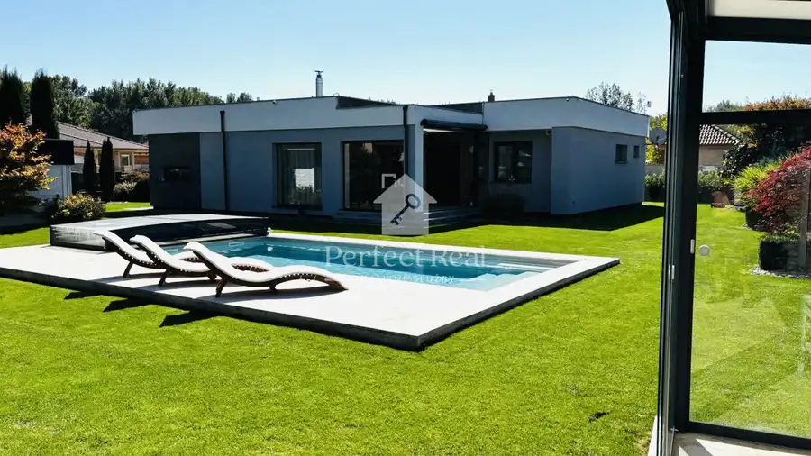
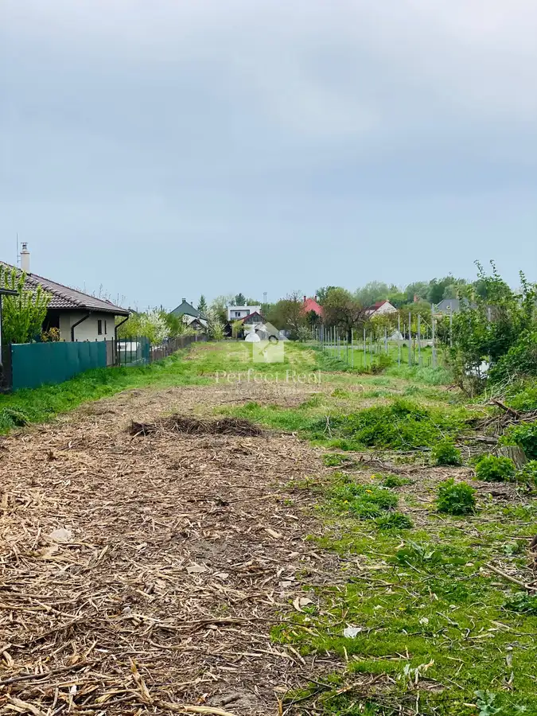

Aktuálna ponuka
6 nehnuteľností, predovšetkým rodinné domy, pozemky, byty. Každá má vlastnú stránku s fotkami, popisom a mapou.
Prezrieť ponukuRenáta KrebsRealitná maklérka
Realitná maklérka · Perfect Real, s.r.o.
Predaj a prenájom nehnuteľností · Gabčíkovo, Baka, Zlaté Klasy

 DomNové9
150 000 €Starší rodinný dom v Gabčíkove na veľkom pozemku
Gabčíkovo
112 m²
Ponúkame Vám na predaj starší rodinný dom v Gabčíkove, na 28á pozemku,postavený v 60tich rokoch, je v pôvodnom stave.Dispozícia…
PozemokNové10
135 000 €Nehnuteľnosť na bývanie a podnikanie v obci Baka
Baka
1038 m²
Ponúkame na predaj jedinečnú nehnuteľnosť, 11á pozemok s platným stavebným povolením na rodinný dom a garáž. Na pozemku sú už zrealizované základy…
BytNové10
189 990 €Veľkometrážny 3izb.byt v novostavbe na predaj
Zlaté Klasy
3-izbový90 m²
Ponúkame Vám na predaj velkometrážny 3izbový byt v Zlatých Klasoch o rozlohe 90m2.Byt sa nachádza na vyvýšenom poschodí polyfunkčnej budovy, 5ročnej…
DomNové9
150 000 €Starší rodinný dom v Gabčíkove na veľkom pozemku
Gabčíkovo
112 m²
Ponúkame Vám na predaj starší rodinný dom v Gabčíkove, na 28á pozemku,postavený v 60tich rokoch, je v pôvodnom stave.Dispozícia…
PozemokNové10
135 000 €Nehnuteľnosť na bývanie a podnikanie v obci Baka
Baka
1038 m²
Ponúkame na predaj jedinečnú nehnuteľnosť, 11á pozemok s platným stavebným povolením na rodinný dom a garáž. Na pozemku sú už zrealizované základy…
BytNové10
189 990 €Veľkometrážny 3izb.byt v novostavbe na predaj
Zlaté Klasy
3-izbový90 m²
Ponúkame Vám na predaj velkometrážny 3izbový byt v Zlatých Klasoch o rozlohe 90m2.Byt sa nachádza na vyvýšenom poschodí polyfunkčnej budovy, 5ročnej…
 Dom10
145 000 €Krásny zachovalý starší 5 izbový rodinný dom v obci Padáň
Padáň
120 m²
Ponúkame Vám exkluzívne na predaj tento jedinečný 5izbový rodinný dom situovaný na pozemku 8á v tichej ulici obce Padáň. Súčasťou nehnuteľnosti je…
Dom10
145 000 €Krásny zachovalý starší 5 izbový rodinný dom v obci Padáň
Padáň
120 m²
Ponúkame Vám exkluzívne na predaj tento jedinečný 5izbový rodinný dom situovaný na pozemku 8á v tichej ulici obce Padáň. Súčasťou nehnuteľnosti je…

Dom10 490 000 €Jedinečná ponuka - Krásny 4izbový dom s bazénom ,dvojgarážou na 18á pozemku v obci Dunajský Klátov Dunajský Klátov 138 m² Ponúkame Vám na predaj priestranný rodinný dom na krásnom pozemku s rozlohou 18á.Výnimočnou výhodou nehnuteľnosti je samostatne oplotený pozemok o…
Pozemok4 Cena dohodou28á Stavebný pozemok so starším rodinným domom v Gabčíkove + 8á Gabčíkovo 2800 m² Ponúkame na predaj v zastavanej časti mesta neďaleko kostola 28á stavebný pozemok, na ktorom sa nachádza starší rodinný dom . K pozemku je možnosť…Tomuto výberu zatiaľ nezodpovedá žiadna ponuka. Napíšte mi, čo hľadáte.
Volám sa Renáta Krebs. Som realitná maklérka kancelárie Perfect Real, s.r.o. a pôsobím predovšetkým v lokalitách Gabčíkovo, Baka, Zlaté Klasy a Padáň (Trnavský kraj).
6 nehnuteľností, predovšetkým rodinné domy, pozemky, byty. Každá má vlastnú stránku s fotkami, popisom a mapou.
Prezrieť ponukuGabčíkovo, Baka, Zlaté Klasy, Padáň, Dunajský Klátov a okolie. Ponuku si môžete prezrieť podľa lokality.
Nehnuteľnosti v lokaliteOdhad trhovej ceny, príprava prezentácie, obhliadky, zmluvy a odovzdanie nehnuteľnosti.
Dohodnúť stretnutieKaždý špendlík je jedna nehnuteľnosť z mojej ponuky. Kliknite a pozrite sa.
© prispievatelia OpenStreetMap
Na čo sa pýtate najčastejšie, skôr než sa stretneme.
Odhad trhovej ceny vychádza z aktuálnych ponúk a predajov v lokalite, nie z cenníkových tabuliek. Podmienky Vám poviem pri prvom telefonáte.
Najprv obhliadka a odhad ceny, potom príprava prezentácie (fotografie, popis, inzercia), obhliadky so záujemcami, rezervačná zmluva, kúpna zmluva, návrh na vklad do katastra a odovzdanie nehnuteľnosti. O každom kroku viete vopred.
Najrýchlejšie cez WhatsApp alebo telefón. Termín stretnutia alebo obhliadky dohodneme podľa Vás.